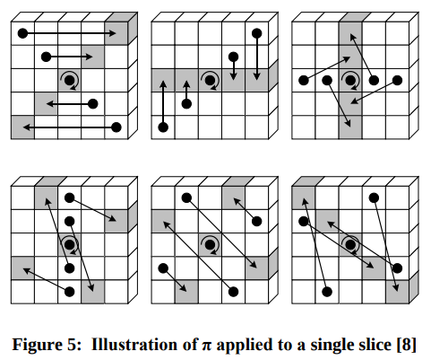

Cryptographic algorithms such as Keccak play a crucial role in securing sensitive information, but they can often seem daunting and complex to understand. The National Institute of Standards and Technology (NIST) standard for Keccak, in particular, has become a widely used cryptographic algorithm due to its high security and efficiency. However, the technical jargon and complex mathematical concepts surrounding Keccak can be intimidating for those unfamiliar with the field of cryptography. In this blog post, I aim to provide a comprehensive yet accessible guide to the NIST standard for Keccak, breaking down the technical terms and explaining them in an easier to understand way.
What is the NIST standard for Keccak?
The NIST standard for Keccak is a set of specifications for the Keccak cryptographic algorithm developed by Guido Bertoni, Joan Daemen, Michaël Peeters, and Gilles Van Assche. The NIST standard, officially known as FIPS 202, was published in 2015 as a replacement for the SHA-3 hash function. Keccak is a family of hash functions, with different versions that provide varying levels of security and performance. The NIST standard specifies the requirements for the use of Keccak in a variety of applications, including digital signatures, key derivation, and password hashing. One of the main advantages of Keccak over other cryptographic algorithms is its ability to resist attacks such as collision, preimage, and second preimage attacks, while also providing excellent performance and flexibility.
Understanding Keccak’s Hash Function
| Hash Function | SHA3-224 | SHA3-256 | SHA3-384 | SHA3-512 |
|---|---|---|---|---|
| Block Size (bytes) | 144 | 136 | 104 | 72 |
https://keccak.team/keccak_specs_summary.html
| Name | r | c | Output length (bits) | Security level (bits) | Mbits | d |
|---|---|---|---|---|---|---|
| SHAKE128 | 1344 | 256 | unlimited | 128 | 1111 | 0x1F |
| SHAKE256 | 1088 | 512 | unlimited | 256 | 1111 | 0x1F |
| SHA3-224 | 1152 | 448 | 224 | 112 | 01 | 0x06 |
| SHA3-256 | 1088 | 512 | 256 | 128 | 01 | 0x06 |
| SHA3-384 | 832 | 768 | 384 | 192 | 01 | 0x06 |
| SHA3-512 | 576 | 1024 | 512 | 256 | 01 | 0x06 |
| cSHAKE128 | 1344 | 256 | unlimited | 128 | 00 | 0x04 |
| cSHAKE256 | 1088 | 512 | unlimited | 256 | 00 | 0x04 |
The 5-step mappings in the Keccak cryptographic algorithm are the core components that transform input data into a fixed-length hash output. These mappings are also known as the Keccak-p permutation, and they consist of the following steps:
- Theta: In this step, the input data is transformed by applying a linear function to each row of the state matrix. This step helps to increase the security of the algorithm by increasing the diffusion of the input data.

- Rho: The state matrix is rotated by a certain number of positions in this step. The amount of rotation is determined by a pre-defined pattern, which varies depending on the version of Keccak being used.
- Pi: In this step, the columns and rows of the state matrix are rearranged according to a pre-defined permutation. This helps to further increase the diffusion of the input data.

- Chi: The state matrix is transformed by applying a non-linear function to each row. This helps to introduce non-linearity into the algorithm and make it more resistant to attacks.
- Iota: The final step involves XORing a pre-defined round constant with a specific location in the state matrix. This helps to add additional randomness to the output and increase the security of the algorithm.
By repeating these 5-step mappings multiple times, the input data is progressively transformed into a fixed-length hash output. The number of rounds performed depends on the version of Keccak being used and the desired level of security. The output produced by Keccak is considered to be highly secure and is resistant to various attacks such as collision, preimage, and second preimage attacks.
Applications of Keccak
Keccak has several applications in the field of cryptography due to its high security and efficiency. Some of the common applications of Keccak include:
Hash Functions: Keccak is commonly used as a hash function to securely store and transmit sensitive data. Its resistance to various attacks makes it suitable for applications such as password storage, digital signatures, and message authentication.
Encryption: Keccak can be used for encryption, especially in applications where data needs to be transmitted securely over a network. The algorithm’s high security makes it a reliable choice for encryption.
Key Derivation: Keccak can be used to derive keys for cryptographic protocols such as TLS (Transport Layer Security) and SSL (Secure Sockets Layer). It is also used to generate keys for secure communication between different systems.
Blockchain: Keccak is used as a hashing function in many blockchain systems such as Ethereum and CryptoNote. The algorithm provides high security, which is necessary for protecting the integrity of the blockchain.
Random Number Generation: Keccak is used in random number generators for secure applications such as gambling, lottery, and cryptography.
In summary, the versatility and high security of Keccak make it a popular choice for a wide range of applications in the field of cryptography.
Conclusion
In conclusion, Keccak is a powerful cryptographic algorithm that has become a popular choice for secure applications such as password storage, digital signatures, and blockchain. Its high security and efficiency make it a reliable choice for various cryptographic operations, including hashing, encryption, key derivation, and random number generation. The 5-step mappings of Keccak, also known as the Keccak-p permutation, provide a robust framework for transforming input data into a fixed-length hash output. While Keccak may seem complex and intimidating to those unfamiliar with cryptography, this blog post has provided a comprehensive yet accessible guide to the NIST standard for Keccak. By breaking down the technical terms and explaining them in an easy-to-understand way, we hope to have demystified Keccak and made it accessible to anyone interested in cryptography.